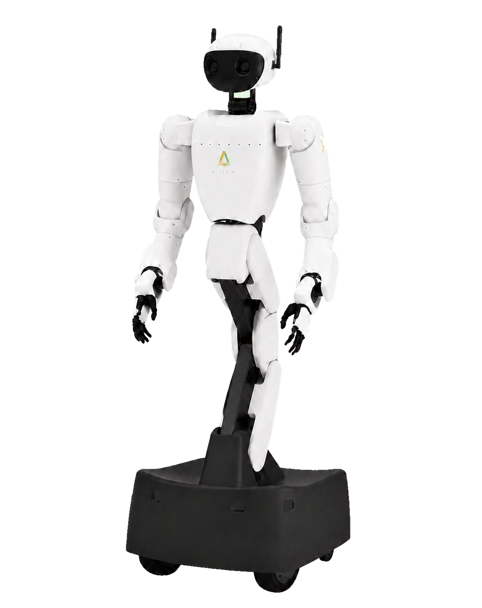
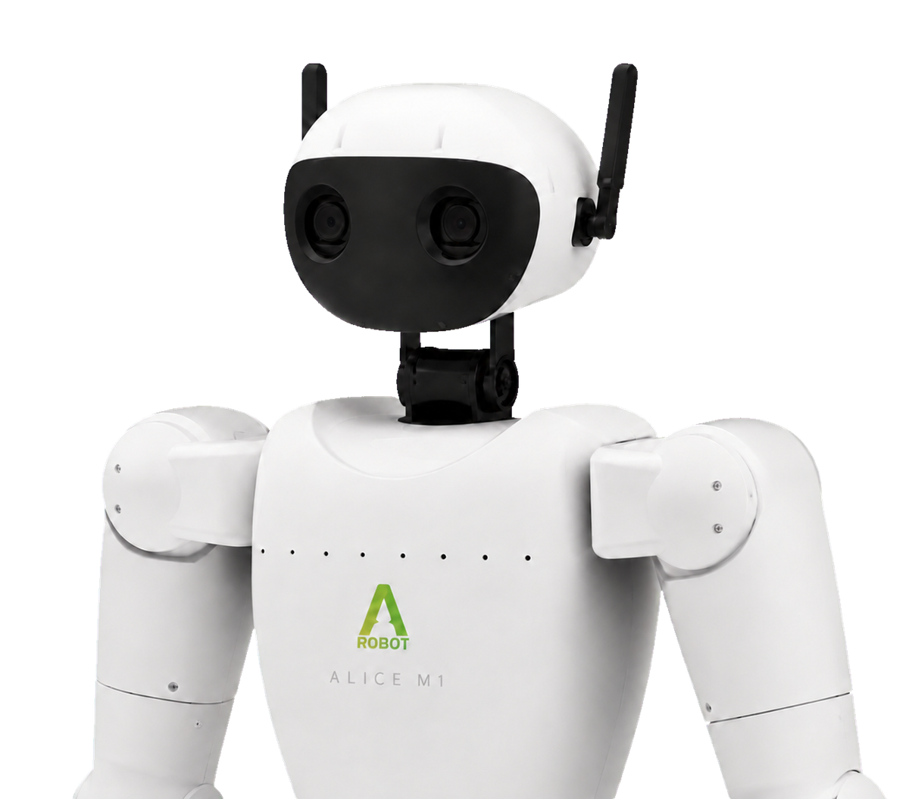
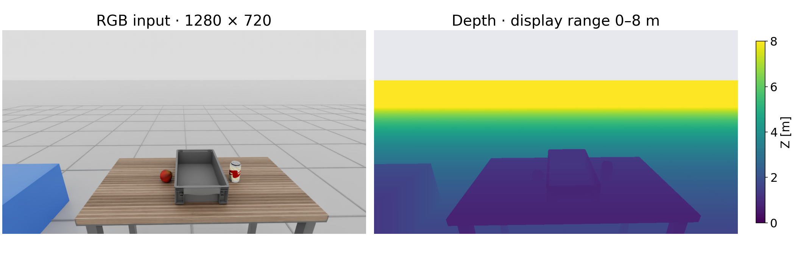
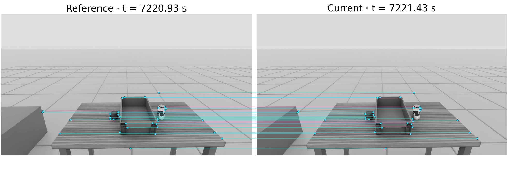
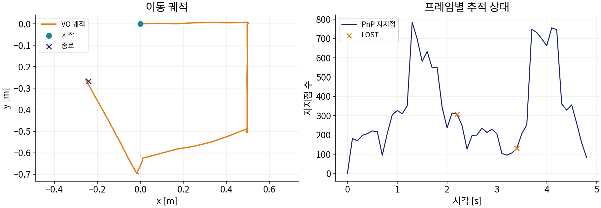
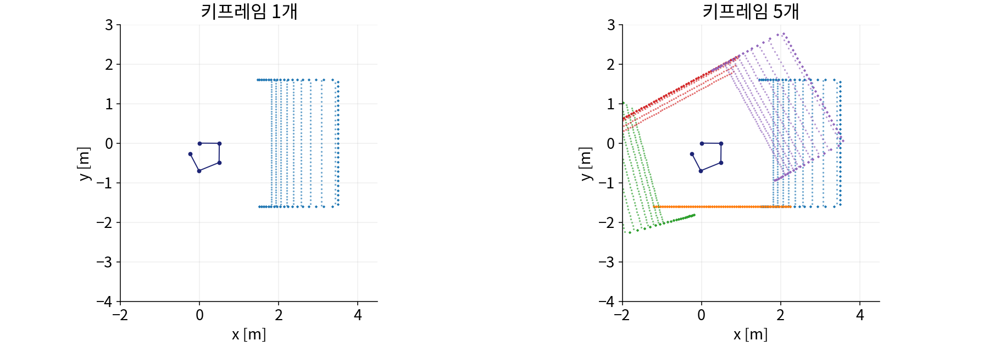
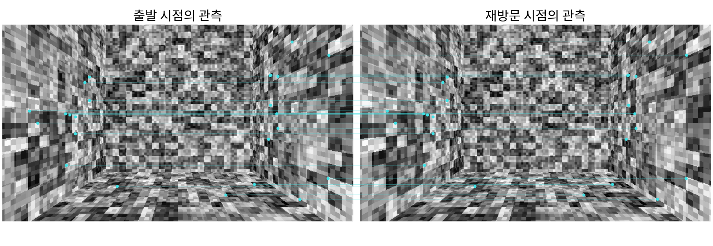
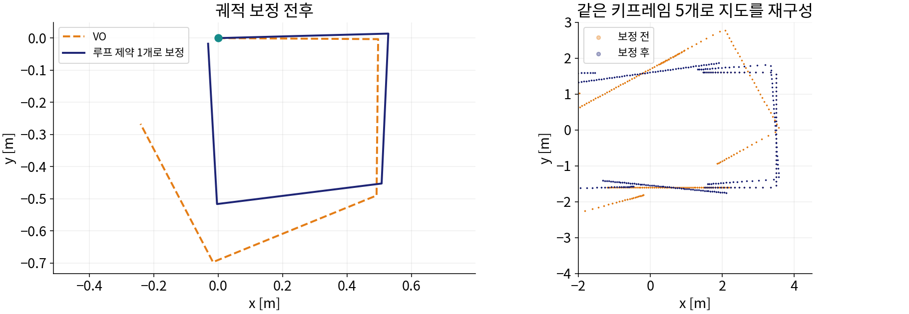

VSLAM
- 로봇의 현재 자세를 추정한다.
- 관측한 특징점으로 지도를 만든다.
- 같은 장소를 다시 인식해 누적 오차를 줄인다.
LECTURE 03
미지 환경에서의 위치 추정과 경로 계획

QUESTION
SLAM · Simultaneous Localization and Mapping
SLAM은 위치 추정과 지도 생성을, Navigation은 경로 계획과 제어기 실행을 맡는다.
VSLAM · Visual SLAM
QUESTION
CONCEPT
BUILD
작은 오차도 적분 과정에서 누적된다.
BUILD
QUESTION
CONCEPT
단안 Vision-only SLAM은 절대 스케일을 관측할 수 없다.
CONCEPT
| 단안 단독 | 영상만으로는 배율을 알 수 없다. 지도와 궤적이 임의의 배율로 나온다. |
|---|---|
| 스테레오 | 두 카메라 사이 거리인 기선이 길이 기준이 된다. 시차로 거리를 계산한다. |
| RGB-D | 센서가 픽셀마다 거리를 직접 내보낸다. 길이 기준이 센서 안에 있다. (Red·Green·Blue + Depth) |
| VIO | 카메라에 IMU를 더한 시각·관성 주행계다. 가속도를 적분한 이동량이 길이 기준이 된다. (Visual-Inertial Odometry) |
STEREO 1 / 4 · 관찰 위치
스테레오는 서로 다른 위치에서 본 영상의 차이로 거리를 추정한다.
왼쪽 눈으로 본 모습
팔을 뻗고 먼 배경을 기준으로 관찰한다.
머리와 손의 위치는 유지한다.
두 눈의 위치가 달라 같은 엄지가 다른 위치에 보인다.
물체는 그대로지만,
관찰 위치에 따라 영상이 달라진다.
같은 물체의 영상 내 위치 차이가 거리 추정의 단서다.
STEREO 2 / 4 · 거리와 시차
영상의 크기와 원점을 맞춘 뒤, 같은 물체의 가로 위치를 비교한다.
시차는 같은 물체점이 좌우 영상에서 나타나는 가로 위치의 차이다.
STEREO 3 / 4 · 거리 추정
물체의 거리를 조절하며 좌우 영상의 위치 차이가 어떻게 변하는지 확인한다.
같은 장면을 서로 다른 위치에서 관찰한다.
같은 물체점의 가로 위치 차이, 즉 시차를 구한다.
카메라 간격과 설정을 기준으로 거리를 계산한다.
픽셀은 디지털 영상을 구성하는 최소 단위다.
같은 카메라 조건에서 물체가 멀어질수록 시차는 작아진다.
STEREO 4 / 4 · 거리 지도
여러 물체점에 같은 계산을 적용하면, 영상의 각 위치에 대응하는 거리를 구할 수 있다.
영상의 위치 차이 → 물체까지 거리
주황색은 가까운 거리,
파란색은 먼 거리를 나타낸다.
무늬 없는 벽이나 먼 물체는 거리 추정이 어렵다.
CONCEPT
RGB-D 카메라는 색 영상과 픽셀마다의 거리를 함께 내보낸다.
CONCEPT
| 스테레오 매칭 | 두 영상에서 같은 점을 찾아 시차로 거리를 계산한다. 실습에 쓰는 ZED가 이 방식이다. |
|---|---|
| 구조광 | 적외선 무늬를 쏘고 그 왜곡으로 거리를 잰다. 실외 햇빛에 약하다. |
| ToF | 빛이 다녀온 시간을 재서 거리를 얻는다. 반사·흡수가 심한 표면에서 값이 튄다. (Time of Flight) |
| 공통 한계 | 무늬 없는 벽·검은 물체·유리와 측정 한계 밖에서는 값이 비어서 온다. |
IMU · Inertial Measurement Unit
CALIBRATION

정확한 외부 파라미터와 시간 동기화가 위치 추정의 기준을 맞춘다.
QUESTION
PIPELINE
프론트엔드는 매 프레임 자세를 내고, 백엔드는 키프레임을 모아 보정한다.
COMPARE
CONCEPT
CONCEPT
여러 프레임에서 같은 키포인트를 추적해 카메라 이동을 계산한다.
COMPARE
CONCEPT
CONCEPT
두 시점의 시선이 만나는 곳이 그 점의 3차원 위치다 — 교차각이 작으면 뎁스가 흔들린다.
CONCEPT
CONCEPT
같은 장소를 다시 인식해 그때와 지금을 하나로 묶는 것이 루프 클로저다.
CONCEPT
비슷한 장면은 기하학적 검증을 통과해야 같은 장소로 인정한다.
CONCEPT
| 후보 검색 | 기술자를 사전으로 요약해 비슷해 보이는 키프레임을 먼저 고른다. |
|---|---|
| 기하 검증 | 대응점으로 자세를 풀어 실제로 같은 위치인지 확인한다. 여기서 대부분 걸러진다. |
| 지역 루프 | 지도에서 가까이 있는 노드와 닫는다. 짧은 구간의 오차를 줄인다. |
| 전역 루프 | 시간이 멀리 떨어진 노드와 닫는다. 누적된 오차를 크게 되돌린다. |
COMPARE
CONCEPT
LiDAR · Light Detection and Ranging
QUESTION
CONCEPT
특징점 지도는 위치 추정용이며, 장애물 지도는 아니다.
COMPARE
Sparse map은 위치 추정용이고, Navigation에는 충돌을 판단할 지도 표현이 필요하다.
COMPARE
| Sparse Landmark | 특징점의 3차원 좌표만 담는다. 가볍지만 빈 곳이 자유 공간이라는 뜻은 아니다. |
|---|---|
| Dense Point Cloud | 표면 형상을 조밀하게 담는다. 무거워서 그대로는 경로 계획에 쓰기 어렵다. |
| Occupancy Grid | 셀마다 자유·점유·미탐색을 담는다. 경로 계획과 충돌 판단이 이 지도를 쓴다. |
DEMO
LOOP CLOSURE DETECTION
지도 작성은 환경 지도를 만들고, 위치 추정은 저장된 지도에서 현재 자세를 계산한다.
QUESTION
CONCEPT
RGB-D와 Stereo 뎁스는 보통 PointCloud2 또는 LaserScan으로 변환해 입력한다.
CONCEPT
| Static Layer | 저장된 지도를 그대로 깐다. 벽처럼 변하지 않는 것을 담당한다. |
|---|---|
| Obstacle Layer | 센서로 들어온 장애물을 올리고, 지나가면 다시 지운다. |
| Voxel Layer | 높이를 나눠 3차원으로 쌓는다. 낮은 턱과 높은 선반을 구분한다. |
| Inflation Layer | 장애물 주변 비용을 부풀린다. 로봇을 점으로 다루기 위한 여유다. |
CONCEPT
비용이 낮은 칸을 이으면 안전한 경로가 된다.
COMPARE
CONCEPT
A* 1 / 3 · 전역 경로 계획
A*(에이 스타)는 장애물을 피해 목표까지의 경로를 찾는 탐색 알고리즘이다.
지도에서 두 위치를 확인한다.
파란 벽을 제외한 빈 칸으로 경로를 연결한다.
이 예제에서는 이동한 칸 수가 곧 비용이다.
탐색의 핵심
다음으로 확인할 후보를 어떻게 고르는가?
A*는 실제 주행 전에 지도에서 목표까지의 경로를 계획한다.
A* 2 / 3 · 후보 비교
후보마다 누적 비용과 남은 비용의 추정값을 더하고, 합이 가장 작은 칸부터 탐색한다.
각 후보의 합을 비교하고, 먼저 탐색할 후보를 선택한다.
남은 거리는 장애물이 없다고 가정하고 ‘가로 칸 수 + 세로 칸 수’로 추정한다.
장애물을 우회하면 실제 이동 거리는 더 길어질 수 있다.
이미 이동한 거리와 앞으로 이동할 거리의 예상값을 함께 평가한다.
A* 3 / 3 · 단계별 탐색
로봇을 이동시키기 전, 지도에서 경로를 탐색하는 과정을 단계별로 확인한다.
전체 후보 중 f가 가장 작은 칸을 꺼낸다.
더 짧은 경로를 찾으면 비용과 이전 칸을 갱신한다.
이전 칸의 기록을 거꾸로 이어 출발점까지 연결한다.
출발 칸을 후보에 넣었다. ‘한 단계 실행’으로 탐색을 진행한다.
후보 선택 → 인접 칸 갱신 → 목표에서 경로 복원
CONCEPT
지역 플래너는 실시간 장애물에 즉시 대응한다.
LANDSCAPE
| 공통 역할 | 전역 경로·현재 속도·코스트맵을 받아 다음 순간의 속도 명령을 낸다. |
|---|---|
| DWB | 속도 후보를 평가해 짧은 시간 구간의 이동 명령을 선택한다. (DWA · Dynamic Window Approach의 후속) |
| MPPI | 여러 제어 궤적을 샘플링하고 비용으로 가중해 명령을 계산한다. (Model Predictive Path Integral) |
| Regulated Pure Pursuit | 경로 곡률과 장애물 거리에 맞춰 추종 속도를 조절한다. |
| TEB | 시간이 포함된 경로를 최적화하는 외부 플러그인 방식이다. (Timed Elastic Band) |
CONCEPT
QUESTION
TF · Transform
map→odom과 odom→base_link의 최종 발행 주체는 각각 하나만 둔다.
CONCEPT
ROS · Robot Operating System
Nav2에는 전역 자세·TF와 충돌 지도를 역할에 맞게 연결한다.
INTEGRATION
| 영상 · 내부 파라미터 | sensor_msgs/Image · CameraInfo — 픽셀과 K가 함께 온다. |
|---|---|
| 오도메트리 | nav_msgs/Odometry — 바퀴와 IMU를 융합한 상대 위치다. |
| 좌표계 | /tf · /tf_static — map→odom→base_link 변환을 실어 나른다. |
| 지도 | nav_msgs/OccupancyGrid — 셀마다 자유·점유·미탐색을 담는다. |
| 속도 명령 | geometry_msgs/Twist — 제어기가 내는 최종 출력이다. |
CONCEPT
CONCEPT
FAILURE
실패 원인은 장면·센서 설정·알고리즘 가정으로 나누어 진단한다.
FAILURE
| 바닥 오인식 | 기울어진 뎁스 포인트클라우드가 바닥을 장애물로 등록한다. |
|---|---|
| 센서 사각 | 유리·검은 물체·낮은 장애물은 뎁스 값이 누락될 수 있다. |
| 잔상 장애물 | 지나간 물체가 Costmap에 남아 이동 가능한 통로를 막는다. |
| 전역 위치 보정 | 보정량이 크면 재계획이 필요하며, 로컬 제어기는 연속적인 odom을 사용한다. |
PRACTICE
영상과 깊이를 같은 시각으로 묶고, 입력 상태를 그림과 표로 확인한다.
ALICE M1 → 학생 노드
/aeirobot/vslam_left_image/aeirobot/vslam_depth/aeirobot/vslam_left_camera_info입력 30쌍으로 먼저 확인한다. 이후 주행 입력을 저장해 실습 2~6에서 함께 사용한다.
BEST_EFFORT로 구독하고 헤더 시각 차이가 20 ms 이내인 영상·깊이를 한 쌍으로 처리한다. CameraInfo는 보관한다.
RGB와 깊이를 나란히 그려 input.png로 저장한다. 깊이에 m 단위 색상 막대를 표시한다.
input.csv에 시각, RGB–깊이 시각 차이, 유효 깊이 비율을 기록한다. 유효 깊이는 유한한 양수다.
input.png + input.csv · 30행을 기록하고, 영상·깊이의 크기와 픽셀 정렬을 확인한다.
RESULT
같은 물체의 위치를 영상과 깊이에서 확인하고, 아래 항목을 입력 로그와 대조한다.

실제 토픽 캡처 예시 · input.csv 열: t_rgb_s, t_depth_s, dt_ms, valid_ratio · 측정값은 장면에 따라 달라진다.
PRACTICE
두 영상에서 같은 지점을 찾고, 자세 추정에 사용할 3D–2D 대응을 만든다.
이전 영상 1장 + 현재 영상 1장
이전 영상의 (X, Y, Z)와 현재 영상의 (u, v)를 한 행에 기록한다. fx·fy·cx·cy는 K에서 읽는다.
시간상 가까운 두 영상에서 ORB를 검출한다. Hamming 거리의 1순위/2순위 비가 0.75 미만인 쌍을 남긴다.
이전 특징점의 픽셀에서 깊이를 읽고 3차원 좌표로 바꾼다. 영상 밖 좌표와 0·NaN·무한대는 제외한다.
matches.png에는 대응선 32개 이내를 그린다. pairs.csv에는 유효한 대응을 모두 기록한다.
matches.png + pairs.csv · 행마다 X, Y, Z, u, v가 대응해야 한다. 25쌍 미만이면 다른 영상 쌍으로 확인한다.
RESULT
그림에서는 같은 지점이 연결되는지, 표에서는 각 행이 올바른 대응인지 확인한다.

실제 토픽 처리 예시 · 가독성을 위해 검증된 대응 32쌍만 표시한다. 수량을 똑같이 맞출 필요는 없다.
PRACTICE
두 영상의 상대 자세를 누적해, 짧은 주행 구간의 궤적 한 개를 만든다.
PnP → 역변환 → 누적
PnP → T_cur_prevT_W_cur = T_W_prev @ inv(T_cur_prev)T_A_B는 B 좌표를 A 좌표로 바꾼다. W는 첫 카메라 좌표계이며 @는 행렬 곱이다.
T_body0_body = M @ T_W_cur @ inv(M)머리 자세를 고정한다. M은 TF의 카메라→몸체 변환이며, 평면 위치 x·y와 yaw를 읽는다.
정지 → 천천히 이동 → 출발 위치·방향으로 복귀하는 한 구간을 저장한다. 알고리즘 점검에는 다음 장의 예시 입력도 사용할 수 있다.
solvePnPRansac의 오차 기준을 3 px로 둔다. 지지점 25개 이상·비율 0.3 이상인지와 이동량을 확인한다. 실패 시 마지막 성공 프레임을 유지한다.
poses.csv에 x·y·yaw, 지지점 수, OK/LOST를 남긴다. x–y 궤적을 trajectory.png로 그린다.
trajectory.png + poses.csv · 시작점을 표시하고, 추적 실패 횟수가 로그의 LOST 행 수와 같은지 확인한다.
RESULT
궤적과 지지점 수를 함께 보면, 이동 추정이 끊긴 시점을 찾을 수 있다.

학습용 합성 입력 실행 예시 · 예시 입력 NPZ · 배열 규격 · poses.csv: t_s, x_m, y_m, yaw_rad, matches, inliers, status, reason
PRACTICE
여러 시점에서 본 3차원 점을 같은 좌표계로 옮겨, 점군 지도 한 장을 만든다.
키프레임 5개 → 점군 지도
p_body0 = M @ T_W_camera @ p_camera점은 동차 좌표 [X, Y, Z, 1]로 계산한다. 원래 점과 카메라 자세를 따로 보관하면 보정 후에도 지도를 다시 만들 수 있다.
추적이 성공한 프레임에서 시작·이동·회전·재방문을 포함하도록 5개를 고른다. 프레임 번호와 선택 이유를 기록한다.
가로·세로 8픽셀 간격으로 유효 깊이를 읽어 3차원 점을 만든다. 0.35~8 m의 점부터 사용한다.
실습 3의 자세로 점을 변환한다. x–y 평면에 키프레임별 색으로 표시하고, 동일한 벽이 어느 위치에 쌓이는지 확인한다.
map.png + keyframes.npz · 키프레임 5개의 번호·시각·자세·지역 점군을 저장하고 같은 지도를 다시 그린다.
RESULT
한 시점의 관측을 여러 시점으로 확장한다. 자세 오차가 있으면 같은 벽이 겹쳐 보일 수 있다.

실습 3과 같은 합성 입력 · 루프 보정 전 점군이다. keyframes.npz에 점을 카메라 좌표로 보관한다. 점유 지도 변환은 추가 확장이다.
PRACTICE
출발 장면과 재방문 장면 한 쌍을 비교해, 같은 장소라는 관측을 검증한다.
처음 K₀ ↔ 재방문 Kⱼ
최근 프레임 대신 멀리 떨어진 두 시각을 연결한다. 재방문을 알아도 상대 자세를 0으로 가정하지 않는다.
시작과 복귀 시점에서 장면이 겹치는 두 키프레임을 고른다. 처음 실습에서는 비교할 번호를 직접 지정한다.
두 프레임의 대응으로 PnP를 계산한다. 지지점 25개 이상·비율 0.3 이상이면 채택하고, 부족하면 기각 사유를 남긴다.
채택한 쌍의 번호 i·j, 상대 자세, 대응 수, 지지점 수를 loop.csv에 저장한다. 대응을 loop.png로 표시한다.
loop.png + loop.csv · 채택/기각과 이유를 기록한다. 채택한 상대 자세 한 개를 실습 6의 제약으로 사용한다.
RESULT
멀리 떨어진 두 시각의 영상이 기하 검증을 통과하면, 두 자세를 연결하는 제약이 된다.

실습 3·4와 같은 합성 입력 · 대응 24쌍만 표시한다. loop.csv 열: i, j, dx_m, dy_m, dyaw_rad, matches, inliers, accepted, reason
PRACTICE
이동 관측과 재방문 관측이 함께 맞도록 자세를 조정하고, 같은 점군으로 지도를 다시 그린다.
평면 자세 qᵢ = (xᵢ, yᵢ, θᵢ)
p는 평면 위치, R은 θ의 회전행렬이다. z는 관측한 상대 이동이며 wrap은 각도를 −π~π로 맞춘다.
첫 자세는 고정한다. 보정 전후에 같은 제약과 같은 가중치를 적용한다. 각도 계산 단위는 rad다.
실습 3의 인접 키프레임 상대 이동과 실습 5의 재방문 제약을 모은다. 관측값은 보정 중에도 고정한다.
잔차를 scipy.optimize.least_squares에 전달한다. 보정한 몸체 자세를 T라 하면 T @ M @ p_camera로 점을 다시 배치한다.
comparison.png에 두 궤적·지도를 겹쳐 그린다. comparison.csv에 J, 루프 위치 잔차, LOST 수를 기록한다.
comparison.png + comparison.csv · J와 지도 변화를 설명하고, 전체 실습 코드·실행 명령을 함께 제출한다.
RESULT
같은 입력과 같은 관측으로 보정 전후를 비교한다. 위치 잔차 감소는 관측 사이의 일관성을 뜻한다.

| 비교 항목 | 보정 전 | 보정 후 | 확인할 내용 |
|---|---|---|---|
| 전체 잔차 J | 84.89 | 9.70 | 같은 제약·가중치로 계산한다. |
| 루프 위치 잔차 | 35.98 cm | 3.59 cm | 관측한 상대 위치와 비교한다. |
| 추적 실패 | 2회 | 2회 | 자세 보정으로 실패 기록이 사라지지는 않는다. |
학습용 합성 입력 · ALICE M1의 정확도 측정값이 아니며, 수치는 제출 기준이 아니다. 결과 파일 예시 ZIP